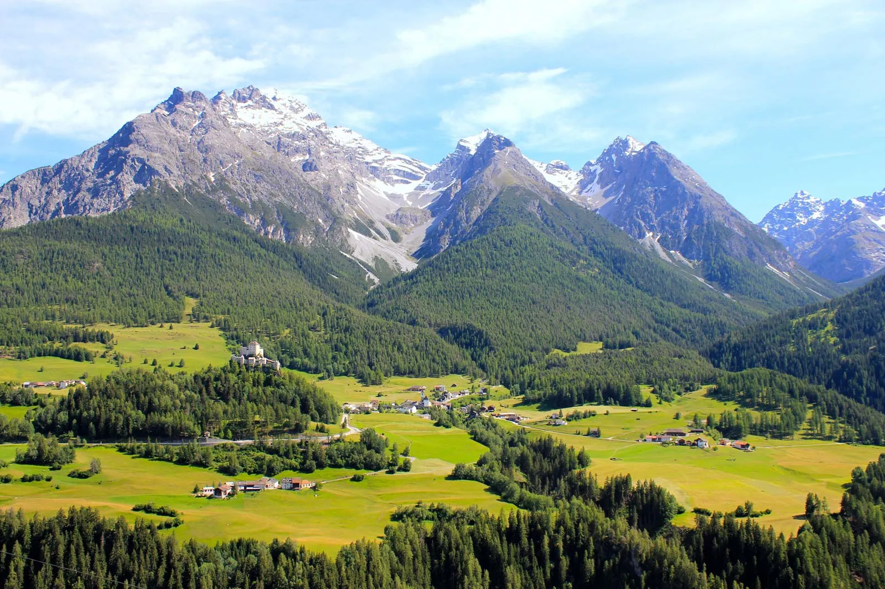

Bernese Mountain Dog
About the Bernese Mountain Dog
The Bernese Mountain Dog, often called the "Berner," is a large, strong, and affectionate breed known for its striking tri-colored coat, friendly temperament, and working dog heritage. Originating from the Swiss Alps, this breed was initially developed to assist farmers by pulling carts, herding livestock, and serving as loyal companions.
Physical Characteristics
- Size:
- Males: 25-27.5 Inches tall, weighing between 85-110lbs.
- Females: 23-26 Inches tall, weighing between 70-95lbs.
- Coat: Thick, double coat with a tri-color pattern: black as the base, white on the chest and face, and rust-colored markings on the legs and cheeks.
- Life Expectancy: 7-10 years.
Personality and Temperment
Bernese Mountain Dogs are known for their gentle, friendly, and affectionate nature. They are excellent family dogs, being especially good with children due to their patient and calm demeanor. Though they are large, they are surprisingly gentle and thrive on human interaction. They are loyal to their families and are often described as "people-oriented."
- Energy Level: Moderate; they enjoy outdoor activities but are also happy to relax at home.
- Social Traits: Friendly with strangers, other dogs, and even cats.
- Training: Intelligent and eager to please, making them relatively easy to train, though they respond best to positive reinforcement.

History and Origins
The Bernese Mountain Dog has a rich history tied to the Swiss Alps. It is one of four Swiss Mountain Dog breeds, descending from Roman Mastiff-type dogs brought to Switzerland over 2,000 years ago. These dogs were bred to be versatile farm workers, excelling at pulling carts loaded with goods and helping to herd livestock. The breed's name comes from the canton of Bern, a region in Switzerland where these dogs were particularly prominent.
Care Requirements
- Exercise Needs: Berners require regular exercise to stay healthy and happy. A daily walk combined with some playtime or light work (e.g., pulling a cart) is ideal.
- Grooming:
- Shedding: Heavy shedder, especially during seasonal changes.
- Regular Brushing: Brushing at least twice a week is essential to manage their thick coat and minimizing shedding.
- Health Concerns:
- Common Issues: Hip dysplasia, elbow dysplasia, and bloat.
- Regular vet checkups and a healthy diet are crucial to maintaining their well-being.
- Diet: High-quality, age-appropriate dog food is essential. Monitor portion sizes to prevent obesity, which can strain their joints.
Fun Facts About the Bernese Mountain Dog
- Great Cart Pullers: Historically, they were used to pull small carts of milk or produce, earning the nickname "Cheese Dogs."
- Cold Weather Lovers: Their thick coat makes them ideal for snowy and cold climates.
- Gentle Giants: Despite their size, they are known for their gentle nature and are often referred to as "gentle giants."
- Movie Stars: Bernese Mountain Dogs have made appearances in several movies, often chosen for their stunning looks and lovable personalities.
Is a Bernese Mountain Dog Right for You?
If you're looking for a loyal, loving, and hardworking companion, the Bernese Mountain Dog might be the perfect match! They thrive in homes where they can spend time with their families and have space to roam or play. While they require a bit of grooming and regular exercise, their affectionate nature makes them well worth the effort.